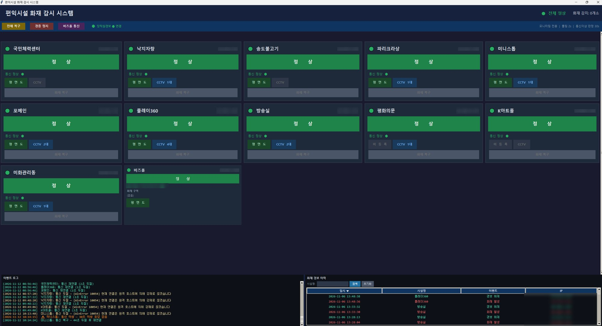
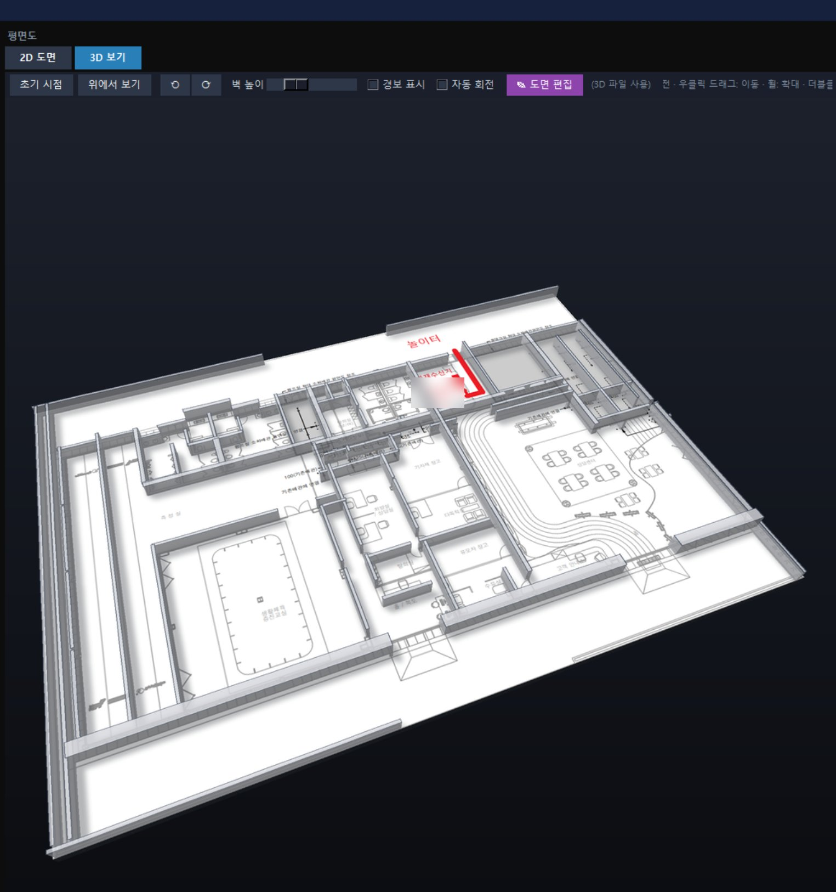

안전 · 보안
올림픽공원 화재 원격감시시스템 구축
전력감시반 SCADA에서 함께 감시하던 편익시설 등 옥외 소방시설(11개소 및 비즈홀 연동)을 별도의 전용 소방 감시 시스템으로 분리했습니다. 담당자는 전용 화면에서 시설별 통신 상태와 화재 경보 이력을 실시간으로 확인할 수 있습니다.


- 3D 도면으로 경보 위치 확인

- 2D 평면도와 3D 도면 전환을 지원해 화재 경보가 발생한 구역을 입체적으로 표시합니다. 담당자가 출동 전 현장 구조와 경보 위치를 빠르게 파악할 수 있습니다.
- 주변 CCTV로 초기 상황 확인

- 경보 위치와 주변 CCTV 영상을 한 화면에 연동해 보여줍니다. 담당자는 현장 영상과 경보 정보를 함께 확인해 실제 화재인지 비화재보(오작동) 가능성이 있는지 신속하게 판단할 수 있습니다.
- AI를 활용한 운전 기록 정리
- 당일의 설비 동작 상태와 통신·오류·경보 이력을 AI로 요약·정리해, 담당자가 반복되는 이상 징후를 살피고 후속 점검과 유지보수에 활용할 수 있도록 합니다.